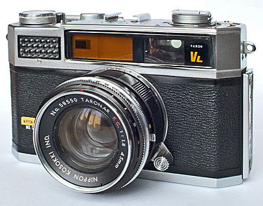
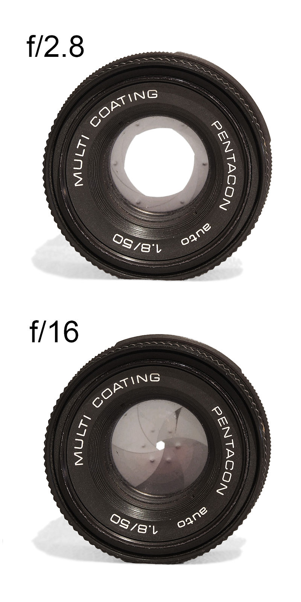
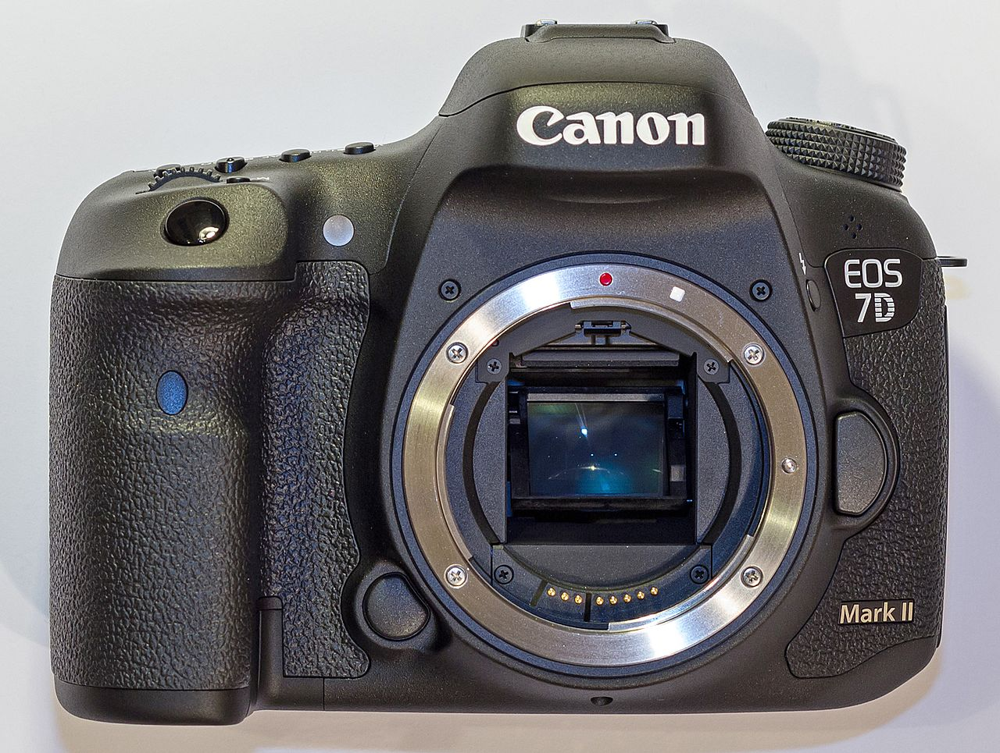

| Aparatul fotografic (sau aparat de fotografiat) este un aparat optic cu ajutorul căruia pot fi obținute imagini reale ale obiectelor. La aparatele clasice, fixarea acestor imagini se făcea pe plăci sau filme acoperite cu un strat de emulsie fotografică. În urma revoluției digitale, majoritatea aparatelor de fotografiat transformă informația vizuală în informație digitală, cu ajutorul unui senzor de imagine. |  |
|---|---|
| Aparat foto pe film |
Părțile principale sunt:
| În optică, apertura reprezintă dimensiunea orificiului prin care trece lumina. Într-un aparat fotografic, diafragma este partea mecanică care controlează apertura
Distanța focală a unui sistem optic este o măsură a puterii de convergență sau divergență a luminii de către acel sistem. Pentru un sistem optic în aer, ea este distanța la care un fascicol colimat este focalizat. Un sistem cu o distanță focală mai scurtă are o putere de deviație optică mai mare decât unul cu distanță focală mai lungă; cu alte cuvinte, el deviază razele mai puternic (cu un unghi mai mare), focalizându-le la o distanță mai scurtă. |
 |
|---|---|
| O apertură mare (1) şi una mică (2) |
|  | Aparatul fotografic reflex (cunoscut și sub abrevierea DSLR pentru engleză digital single-lens reflex) reprezintă un aparat de fotografiat digital, care utilizează un sistem mecanic tip oglindă și pentaprismă pentru a direcționa lumina direct de la lentilele fotografice la cele optice, printr-un vizor pe partea din spate a aparatului de fotografiat. O imagine digitală este alcătuită dintr-o colecție de puncte minuscule denumite pixeli. Dacă imaginea conține un număr mare de puncte înseamnă că este de mari dimensiuni, că ocupă mai multă memorie și că prezintă subiectul până în mici detalii. Dimensiunea imaginii este exprimată prin numărul de pixeli. Cu toate că diferențele nu sunt vizibile pe ecranul camerei foto, detaliile fine și procesarea datelor pot diferi atunci când imaginea este tipărită sau prezentată pe monitorul unui calculator personal. |
|---|---|
| Aparat foto DSLR |
Aparatul fotografic hibrid (în engleză Mirrorless interchangeable-lens camera) este un aparat de fotografiat digital, care utilizează un sistem digital de captare a imaginii pe senzor. Spre deosebire de aparatul fotografic reflex, aparatul fotografic hibrid nu are oglindă și nici vizor optic.
Camerele foto hibride sunt considerate o evoluție naturală de la aparatul fotografic reflex, renunțarea la oglinda mobilă de pe acestea aducând deopotrivă beneficii și dezavantaje. Prima diferență importantă este mărimea și greutatea, un aparatul foto reflex cântărind în jur de 500 grame, iar un hibrid 200 grame. A doua este lipsa vizorului optic, unele modele compensând cu un vizor digital, care își ia imaginea de pe senzor.